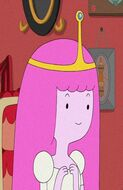

Selecione um personagem
- 
Ciclope
Ele tem o poder de disparar rajadas ópticas por um acidente que aconteceu com ele quando criança, mas não consegue controlá-los
Ele tem o poder de disparar rajadas ópticas por um acidente que aconteceu com ele quando criança, mas não consegue controlá-los